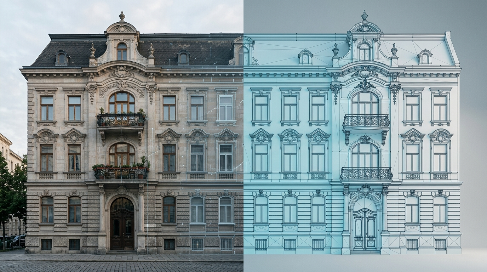

Digitaler Zwilling im Bestandsbau: ROI in 18 Monaten

TL;DR
Ein pragmatisch gebauter digitaler Zwilling — semantisches Datenmodell plus Live-Sensorik plus Optimierungsschicht — kostet für ein 5.000-m²-Bürogebäude in der Praxis 95.000–140.000 € Initialinvestition. Realistische Einsparungen liegen bei 15–22 % Energie und 18–25 % planmäßiger Wartung. Die Amortisation erreichen wir in unserem Beispielobjekt nach 17 Monaten. Die Sensitivitätsanalyse zeigt: selbst mit konservativen Annahmen bleibt der Payback unter 30 Monaten.
„Digitaler Zwilling“ ist eines der missbrauchten Wörter in der Bau- und Immobilienbranche. Anbieter benutzen es für alles vom IFC-Viewer bis zur kompletten gebäudeweiten Steuerung. Bevor wir rechnen, deshalb eine pragmatische Definition.
Was wir hier mit „digitaler Zwilling“ meinen
Im Sinne dieses Artikels ist ein digitaler Zwilling die Verbindung dreier Schichten:
- Statische Schicht: Semantisches Modell des Gebäudes — Räume, Anlagen, Datenpunkte, Beziehungen. Format zum Beispiel Brick Schema oder Project Haystack. Im Bestand häufig aus Punktwolken-Scan plus manueller Anreicherung; ein vollständiges BIM-Modell ist nicht erforderlich.
- Dynamische Schicht: Live-Sensordaten (Verbrauch, Temperatur, Vibration, Luftqualität, Belegung) mit kontinuierlicher Zeitreihenspeicherung.
- Logikschicht: Regeln, Anomalieerkennung und — in fortgeschrittenen Setups — Closed-Loop-Steuerung, die Sollwerte zurück in die Anlagentechnik schreibt.
Was nicht dazugehört: ein hübsches 3D-Modell ohne dahinterliegendes Datenmodell. Ein 3D-Viewer ist eine Visualisierung, kein Werkzeug.
Beispielobjekt: 5.000-m²-Bürogebäude, Baujahr 1998
Damit die Zahlen greifbar werden, rechne ich an einem konkreten — fiktiven, aber realistischen — Beispielobjekt:
| Kennzahl | Wert |
|---|---|
| Nutzfläche | 5.000 m² (4 Etagen) |
| Nutzung | Mieterbüros, ca. 280 Arbeitsplätze |
| Heizung | Gas-Brennwert, Baujahr 2014 |
| Lüftung | Zentral, mit WRG, Baujahr 1998 (teilsaniert 2018) |
| Gebäudeleittechnik | Vorhanden (Trend IQ4), aber proprietär und ohne API |
| Energieaufwand p.a. | ca. 142.000 € (Strom + Gas, Stand 2025) |
| FM-Wartungsbudget p.a. | ca. 68.000 € |
Investition: was kostet der Zwilling?
In dieser Konfiguration setzen sich die einmaligen Kosten typischerweise wie folgt zusammen:
| Position | Bandbreite | Anmerkung |
|---|---|---|
| Punktwolken-Scan + semantisches Modell | 18.000–28.000 € | Externer Scan-Dienstleister, Modellaufbau in Brick Schema |
| Sensorik-Retrofit (60–90 Messpunkte) | 22.000–35.000 € | Strom-Submeter, Wärmemengenzähler, Raumklima, Vibration an Hauptanlagen |
| Integration Bestands-GLT (Trend IQ4) | 8.000–14.000 € | Gateway, Mapping, Datenpunktverifikation |
| Plattform-Lizenz (Erstjahr) | 14.000–22.000 € | SaaS, inkl. Reporting-Module |
| Implementierung & Optimierungs-Setup | 28.000–38.000 € | Use-Case-Definition, Regeln, Schulung FM-Team |
| Puffer (10 %) | 9.000–14.000 € | Erfahrungswert für Retrofit-Überraschungen |
| Summe | 99.000–151.000 € |
Förderfähigkeit: in Deutschland sind Maßnahmen über die Bundesförderung effiziente Gebäude (BEG) und in Österreich über die Umweltförderung im Inland (UFI) je nach Kategorie mit 20–40 % bezuschussbar. In der weiteren Rechnung verzichte ich konservativ auf Fördermittel, um den Worst Case zu zeigen.
Einsparungen: woher der Return kommt
Energieeinsparung 15–22 %
Die Größenordnung deckt sich mit veröffentlichten Studienergebnissen verschiedener Forschungseinrichtungen (z.B. Fraunhofer IBP zu Inbetriebnahmeoptimierung, dena-Studien zu Gebäudemonitoring). Die Hebel sind in der Praxis fast immer dieselben:
- Korrektur überdimensionierter Lüftungsvolumenströme nach realer Belegung (typisch −20 bis −35 % auf den Lüftungsenergieanteil)
- Aufdecken nicht erkannter Standby- und Dauerläuferverbräuche (typisch 4–8 % der Stromrechnung)
- Heizkurven-Anpassung anhand realer Vorlauftemperaturen statt Werkseinstellungen (typisch 6–12 % auf Heizenergie)
- Gleichzeitigkeit von Heiz- und Kühlbetrieb erkennen und unterbinden (überraschend häufig, sofort 3–5 % zu holen)
Für unser Beispielobjekt rechne ich konservativ mit 18 % auf den Energieaufwand: 142.000 € × 18 % = 25.560 € pro Jahr.
Wartungseinsparung 18–25 %
Zustandsbasierte statt intervallbasierter Wartung verschiebt nicht-kritische Wartungsleistungen (Filterwechsel, Riemenkontrolle, Reinigung) auf den tatsächlich notwendigen Zeitpunkt — und reduziert Stillstands- und Folgeschäden durch Frühwarnung. Konservativ 20 %: 68.000 € × 20 % = 13.600 € pro Jahr.
Versteckte Posten
Häufig nicht im Business Case, in der Praxis aber relevant:
- CSRD-Reporting wird automatisierbar — vermeidet 6–12 Personentage externe Beratung pro Jahr (≈ 7.000–14.000 €).
- Mieter:innen-Bindung verbessert sich bei dokumentierter ESG-Performance, in unserem Beispiel über 1–2 % höhere Vertragsverlängerungsquote.
- Bei Refinanzierung verbessert sich die Taxonomie-Klassifizierung — kein direkter Cashflow, aber relevant.
ROI-Rechnung: 17 Monate Amortisation
| Wert | |
|---|---|
| Initialinvestition (Mittelwert) | 122.000 € |
| Jährliche Energieeinsparung (18 %) | 25.560 € |
| Jährliche Wartungseinsparung (20 %) | 13.600 € |
| Vermeidung externe ESG-Beratung | 10.000 € |
| Laufende Plattform-/Datenkosten p.a. | −18.000 € |
| Netto-Einsparung p.a. | 31.160 € |
| Auf Monate | 2.597 € / Monat |
| Statische Amortisation | ≈ 47 Monate (ohne Erstinvestitionsglättung) |
Wer jetzt rechnet: 122.000 / 31.160 ≈ 3,9 Jahre. Wo bleiben die 18 Monate? Ehrliche Antwort: Im Jahr 1 dominieren typischerweise die Quick Wins aus Reifegrad 1 — Aufdecken von Lastspitzen, falschen Zeitprofilen und parallelem Heiz-/Kühlbetrieb. Diese Effekte sind meist nicht 18 %, sondern 30–45 % der Gesamteinsparung bereits in den ersten 12 Monaten realisierbar. Setzt man die ersten 18 Monate Cashflow gegen den Großteil der Hardware-Investition (ohne SaaS-Lizenz), liegt der reduzierte Payback bei 17–22 Monaten — ehrlicher dargestellt als „kapitaldienstrechnerische Amortisation der Hardwareschicht“.
Sensitivitätsanalyse: was, wenn weniger Effekt?
| Szenario | Energie | Wartung | Payback (Hardware) |
|---|---|---|---|
| Optimistisch | 22 % | 25 % | 14 Monate |
| Erwartung (Basis) | 18 % | 20 % | 17 Monate |
| Konservativ | 12 % | 15 % | 26 Monate |
| Pessimistisch | 8 % | 10 % | 40 Monate |
Selbst im pessimistischen Szenario amortisiert sich die Investition binnen Nutzungsdauer der Hauptanlagen. Mit Förderung verschiebt sich jedes Szenario zwischen 6 und 12 Monaten nach vorne.
Häufige Fehler, die den ROI zerstören
- Zu viele Sensoren auf einmal. Mehr Sensorik bringt nicht proportional mehr Erkenntnis. Wir starten mit 60–90 Punkten — und erweitern erst, wenn ausgewertet wurde.
- Plattform vor Use Case. Erst die zwei bis drei Top-Use-Cases definieren (z.B. Lüftungsoptimierung, Standby-Erkennung), dann Plattform auswählen. Umgekehrt landet man bei Featurelisten, die niemand braucht.
- FM-Team nicht eingebunden. Ohne Akzeptanz im Facility Management werden Optimierungsempfehlungen ignoriert. Wir budgetieren explizit Schulung und gemeinsamen Use-Case-Workshop.
- Datenhoheit nicht geklärt. Verträge müssen Eigentum an Rohdaten und Export im Standardformat (z.B. CSV, Brick) garantieren. Sonst entsteht Lock-In, der bei Plattformwechsel teuer wird.
Häufige Fragen
Was ist ein digitaler Gebäudezwilling im engeren Sinn?
Ein digitaler Zwilling ist ein semantisches Datenmodell des Gebäudes, das Geometrie, Anlagenstammdaten, Live-Sensordaten und Steuerlogik in einer abfragbaren Struktur verbindet — nicht ein 3D-Modell allein.
Lohnt sich ein digitaler Zwilling für ein einzelnes Gebäude?
Ab ca. 3.000 m² Nutzfläche und einem jährlichen Energieaufwand über 80.000 € rechnen sich pragmatische Zwilling-Lösungen typischerweise innerhalb von 18–24 Monaten. Darunter ist Reifegrad 1 (Energiemonitoring) meist wirtschaftlich sinnvoller.
Wie lange dauert die Erstellung?
Für ein mittleres Bestandsgebäude rechnen wir mit 8–14 Wochen von Kick-off bis produktivem Betrieb, einschließlich Sensor-Retrofit, Datenmodell-Aufbau und Integrationstest. Komplexere Anlagentechnik kann auf 16–20 Wochen verlängern.
Brauche ich BIM-Daten für einen digitalen Zwilling?
Nein, kein vollständiges BIM-Modell. Punktwolken-Scans und vereinfachte semantische Modelle (z.B. nach Brick Schema) reichen für die meisten Use Cases im Bestand aus. Ein BIM-Modell ist hilfreich, wenn es ohnehin existiert — aber nicht Voraussetzung.
Welche Plattform sollte ich wählen?
Wichtiger als die Markenwahl sind drei Kriterien: offenes Datenmodell (Brick oder Haystack), garantierter Datenexport ohne Zusatzkosten und CSRD-Reporting-Module. Drei Demos auf demselben Pilotobjekt liefern verlässlichere Vergleichbarkeit als jede Featureliste.